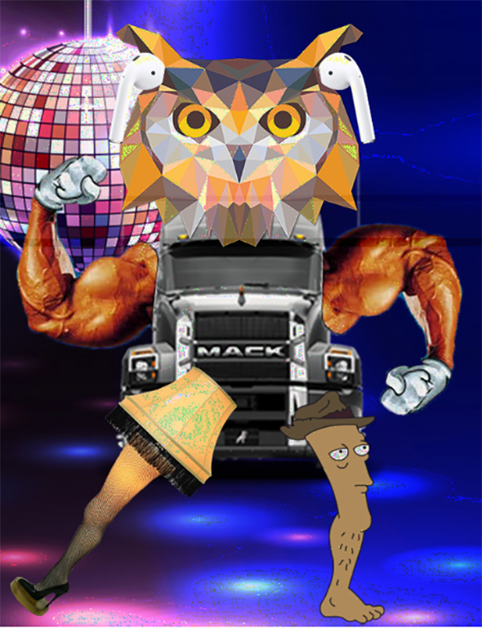
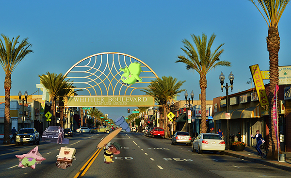
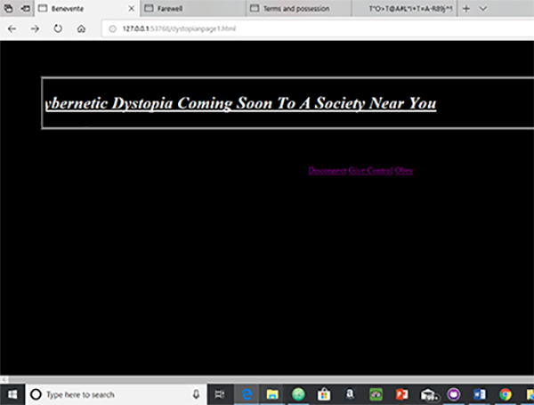
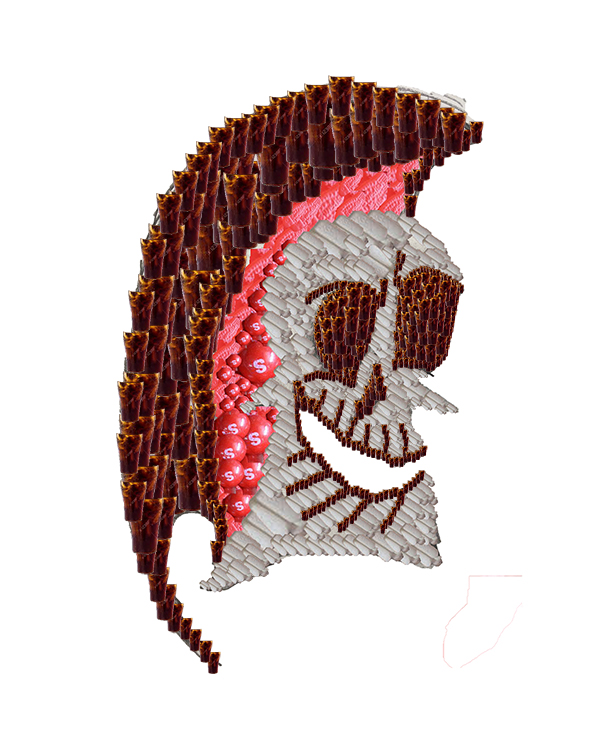
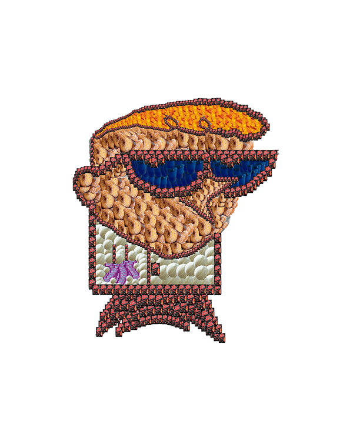

Punketon from Ruben Martinez Aguilar on Vimeo.
Punketon, video collage, 2019
It’s a pure mash-up of multiple punk and metal shows. Coming from all angles, from high up in the balcony to down deep in the pit. The viewer gets to feel fast and loud rage without risking the bruises and scars. .
>
DTSJ Sounds, sound art, 2019
Walking down the streets at night in downtown San Jose. The sounds of motors and hydraulics fill the streets. You are just a lone vandal.

Techno Glitch, Glitch Art, 2019
The basis of my glitch piece was an owl Transformer at the disco. After running it through Audacity, subtle static was added, giving the illusion of laser beams around the owl’s head.

East L.A. Jam, Digital Composite, 2019
In my composite location, East Los Angeles got hit with some type of Space Jam magic. Cartoons and public figures inhabited the same universe. Chalino Sanchez and Austin Powers are standing off to the sidewalk. Meanwhile, Jerry’s cousin is attempting to brutalize Spongebob and Patrick, but Fred Fredburger swoops in to save the day.

Welcome to the 3D Era, Net Art, 2019
Dark forces overtook the internet. May it be top secret government agencies or demonic entities, we are soon to be controlled. The internet is their tool to trap our minds to do their mysterious bidding.

Candy Grim, Digital Composite, 2019
Peppermint Larry is a lonely candy bartender from Cartoon Network show the Misadventures of Flapjack. Due to his solitude, he creates a wife out of candy. In homage to Peppermint Larry, I created images of my favorite Cartoon Network characters out of my childhood sweets.

Candy Courage, Digital Composite, 2019
Peppermint Larry is a lonely candy bartender from Cartoon Network show the Misadventures of Flapjack. Due to his solitude, he creates a wife out of candy. In homage to Peppermint Larry, I created images of my favorite Cartoon Network characters out of my childhood sweets..

Candy Dexter, Digital Composite, 2019
Peppermint Larry is a lonely candy bartender from Cartoon Network show the Misadventures of Flapjack. Due to his solitude, he creates a wife out of candy. In homage to Peppermint Larry, I created images of my favorite Cartoon Network characters out of my childhood sweets.